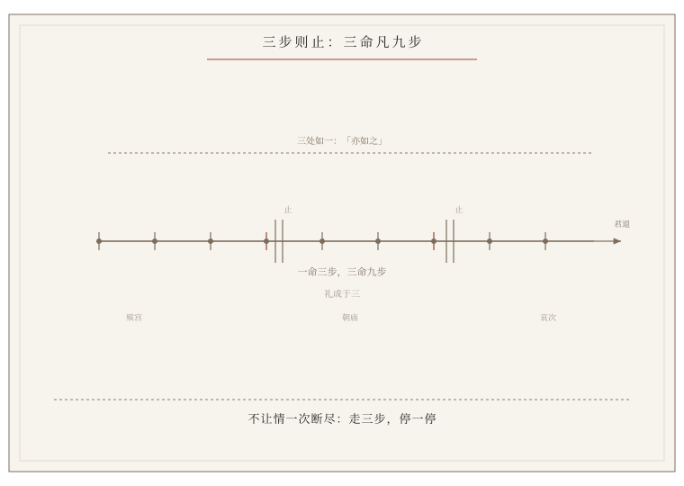

檀弓下 · 四·三 · 第 328 课
君于大夫，将葬，吊于宫；及出，命引之，三步则止。如是者三，君退。朝亦如之，哀次亦如之。
说什么事：君吊大夫之丧。将至葬时，君亲往殡宫吊；柩出殡宫，孝子攀辕不让走，君命人牵之，三步即止，三次共移九步，然后柩行，君退。朝庙如此，哀次亦如此。
落在哪一层：以「步」量夺情。论「不让情一次断尽」。
为何编在此位：三百二十六课论车数，此课论「引」——车的走动也有礼。
【经】君於大夫，將葬，吊於宮；及出，命引之，三步則止。如是者三，君退。朝亦如之，哀次亦如之。
【注】以義奪孝子。宮，殯宮。出謂柩已在路。／退，去也。三命引之，凡移九步。／君吊不必於宮。朝，喪朝廟也。次，他日賓客所受大門外舍也。孝子至此而哀，君或於是吊焉。
【疏】此一节论君吊臣之礼。君于大夫之丧，将至葬时，君必亲往吊于殡宫，谓就殡宫以吊孝子；吊礼既毕，及其柩出殡宫之门，孝子号慕攀辕，柩车不动，君夺孝子之情，命遣引之；引者三步则止，所以止者，引者不忍顿夺孝子之情，故且止柩住；君又命引之，引之者三步而止；君又命引之，引之者三步而止；故如是者三，君又命引之，柩车遂行，君便退去。君或来吊，参差早晚，不必恒在殡宫；或当朝庙明日将发之时，亦如柩出殡宫，命引之三步，如是者三之事，故云「朝亦如之」。君吊或晚，不及朝庙之时，朝庙已毕，柩出大门，至平生待宾客次舍之处，孝子哀其平生次舍之处，停柩不行，君于是始吊；吊毕，君命引之使行，如上来之事，故云「哀次亦如之」。注「三命引之，凡移九步」：以礼成于三，故知凡为九步；郑必分明言九步者，以经上云「引之，三步则止」，下云「如是者三」，恐别更为三、通前为四、十有二步之嫌，故明言「九步」也。
宫 注「宫，殡宫」。殡宫，停柩之处。
及出 柩出殡宫之门。注「出谓柩已在路」。
引 牵柩车之索。此作动词，牵引。
三步则止 牵者走三步便停。
如是者三 三次。三命，共移九步。
朝 注「丧朝庙也」。柩朝祖庙。
哀次 柩出大门，停于平生待宾客之次舍处，孝子于此最哀。
以义夺孝子 以义断情。
君于大夫之丧，将至葬时亲往殡宫吊。柩出殡门，孝子攀辕号哭，柩车不动；君命人牵引，走三步便停；如此三次，共移九步，然后柩行，君退。朝庙时如此，停于哀次时亦如此。
一事三处，同一礼：殡宫、朝庙、哀次。
做法是：孝子攀辕，柩不动；君命引，三步止；三命九步；柩行，君退。
要义全在「三步则止」四字——不是不许走，是不许一次走尽。
第一层 「以义夺孝子」：礼的断 注五字。孝子攀辕是情，君命引之是义。礼在情最不肯处，用义断之。
但礼的「夺」是断而不猛：三步则止。断，是为了让柩走；不猛，是为了让情有个落点。
今人办事，多求「一次性解决」。此节给的形是：解决也要分段，一段一步。
第二层 「引者不忍顿夺」：连执行者都有分寸 疏说得极好：「引者三步则止，所以止者，引者不忍顿夺孝子之情，故且止柩住。」
牵车的人，也在替孝子留余地。礼的分寸不只落在君与孝子之间，也落在那个动手的人手上。凡执行礼的人，都须有一分不忍。
第三层 三与九：礼成于三 疏「以礼成于三，故知凡为九步」。三是礼的常数：三揖、三让、三命。
郑玄还特意算清「九步」，怕人误算成十二步——「恐别更为三、通前为四、十有二步之嫌」。注家连算术都不放过。这一点很动人：礼的每一步都要数清，因为它要可复。
第四层 三处如一：地变而礼不变 殡宫、朝庙、哀次，三处不同：一处是停柩之所，一处是告祖之所，一处是平生待客之所。而礼同——「亦如之」。
礼的「恒」，不在其形之不变，在其「随处而用同一法」。这一条今日可用：换场景不换根本，才叫守礼。
第五层 「哀次」：哀其平生 柩出大门，停在平生待宾客之处，孝子于此最哀。此哀不为死，为「平生」——看见他往日站过的地方。
礼把「物」当作记忆的开关。一处空地，胜过千言。
与今日何干 今人送葬，多求快些结束。此节给的形是：三步一停，三停方行。其义：打断要有节奏，别一次断尽。
| 左 | 右 |
|---|---|
| 吊于宫 | 殡宫 |
| 及出 | 柩已在路 |
| 命引之 | 以义夺情 |
| 三步则止 | 不一次断尽 |
| 如是者三 | 三命 |
| 凡移九步 | 郑特为算清 |
| 朝亦如之 | 朝庙 |
| 哀次亦如之 | 平生待客之处 |
画一处殡宫门外，视点平视。一具柩车正出门，车前有索数条，索端有数人执之（只画手与袖）。车旁一人攀辕俯身，只画衣与背影。车后地面画三道浅痕，间隔相等（示三步一停）。远处一道门框。不画人面、不写文字。赭色只用在车辕一道，与三道浅痕的第一道。
